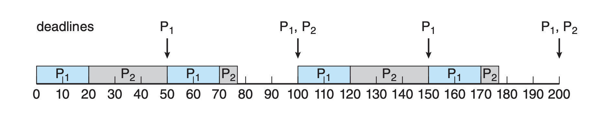
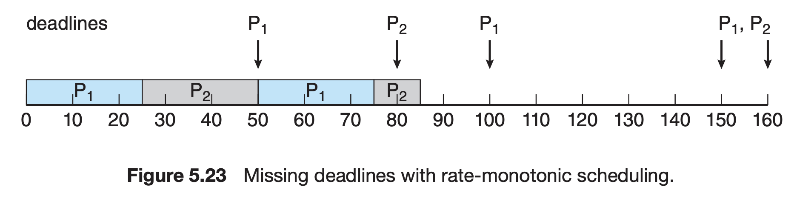

CPU-scheduling decisions may take place under four circumstances:
when a process switches from the running state to the waiting state,
from running to ready,
from waiting to ready,
and when a process terminates
Scheduling can be either preemptive or nonpreemptive. Preemptive scheduling allows the CPU to be taken away from a process, whereas nonpreemptive scheduling requires a process to voluntarily relinquish control of the CPU.
Most modern operating systems, including Windows, macOS, Linux, and UNIX, use preemptive scheduling algorithms.
Preemptive scheduling can result in race conditions when data are shared among several processes.
Different CPU-scheduling algorithms have different properties, and the choice of a particular algorithm may favor one class of processes over another.
CPU utilization aims to keep the CPU as busy as possible, conceptually ranging from 0 to 100 percent.
Many criteria have been suggested for comparing CPU-scheduling algorithms, including CPU utilization, throughput, turnaround time, waiting time, and response time.
Throughput: Throughput is concerned with the number of processes that complete their execution per time unit.
Turnaround Time: Turnaround time is the interval from the time of submission of a process to the time of completion.
Waiting Time: Waiting time is the sum of the periods spent waiting in the ready queue.
Response Time: Response time is the time from the submission of a request until the first response is produced.
FCFS scheduling is the simplest scheduling algorithm.
It can cause short processes to wait for very long processes.
FCFS scheduling is nonpreemptive, meaning once the CPU has been allocated to a process, the process keeps the CPU until it releases the processor, either by terminating or by requesting I/O.
The issues with FCFS scheduling can be particularly problematic in a dynamic system, where expected CPU and I/O burst times are not known in advance.
Shortest-job-first (SJF) scheduling is provably optimal, providing the shortest average waiting time. However, implementing SJF scheduling can be difficult because predicting the length of the next CPU burst is challenging.
SJF scheduling can be either preemptive or nonpreemptive. Preemptive SJF scheduling (also known as shortest-remaining-time-first scheduling) may preempt the currently executing process if a new process arrives with a shorter next CPU burst.
Nonpreemptive SJF scheduling allows the currently running process to finish its CPU burst even if a new process with a shorter next CPU burst arrives.
Although SJF scheduling gives the minimum average waiting time, it cannot be implemented at the level of CPU scheduling due to the difficulty in predicting the length of the next CPU burst. Approximations of SJF scheduling might be used instead.
Round Robin (RR) scheduling allocates the CPU to each process for a time quantum. If a process does not relinquish the CPU before its time quantum expires, it is preempted, and another process is scheduled to run for a time quantum.
The ready queue is treated as a circular queue, and the CPU scheduler goes around the ready queue, allocating the CPU to each process for a time quantum and then moving it to the back of the queue.
RR scheduling is simple, fair, and starvation-free, but it often does not provide the best possible service.
Multilevel queue scheduling partitions processes into several separate queues, each with its own scheduling algorithm.
Processes are permanently assigned to one queue, generally based on some property of the process, such as memory size, process priority, or process type.
Each queue may have its own scheduling algorithm, or multiple queues may use the same scheduling algorithm.
Scheduling must also be done between the queues, which is commonly implemented as fixed-priority preemptive scheduling.
Real-time operating systems have specific scheduling needs, and they can be classified into hard and soft real-time systems.
Hard real-time systems have strict timing constraints, while soft real-time computing requires that critical processes receive priority over others.
Real-time scheduling algorithms include rate-monotonic scheduling and earliest-deadline-first (EDF) scheduling.
Rate-monotonic scheduling assigns the highest priority to the task with the shortest period, while EDF scheduling assigns the highest priority to the task with the closest deadline.
The rate-monotonic scheduling algorithm schedules periodic tasks using a static priority policy with preemption. If a lower-priority process is running and a higher-priority process becomes available to run, it will preempt the lower-priority process. Upon entering the system, each periodic task is assigned a priority inversely based on its period. The shorter the period, the higher the priority; the longer the period, the lower the priority. The rationale behind this policy is to assign a higher priority to tasks that require the CPU more often.
Rate-monotonic scheduling assumes that the process's period and processing time are constant and known in advance. The scheduler can then determine the scheduling feasibility for a set of processes to ensure that each process can meet its deadline requirements.

Figure 5.22: Rate-monotonic scheduling.
In an example, suppose we have two processes, P1 and P2, with their respective periods and CPU bursts. Using rate-monotonic scheduling, P1 is assigned a higher priority than P2 if P1's period is shorter than P2's. The execution of these processes is shown in Figure 5.22. P1 starts first and meets its first deadline, followed by P2. The system remains idle until P1 is scheduled again.
Rate-monotonic scheduling is considered optimal in the sense that if a set of processes cannot be scheduled by this algorithm, they cannot be scheduled by any other algorithm that assigns static priorities. However, there are situations where rate-monotonic scheduling may not guarantee that processes meet their deadlines, as illustrated in Figure 5.23.

Figure 5.23: Missing deadlines with rate-monotonic scheduling.
Despite being optimal, rate-monotonic scheduling has a limitation: CPU utilization is bounded, and it's not always possible to maximize CPU resources fully. The worst-case CPU utilization for scheduling N processes is N(2^(1/N)-1). With one process, CPU utilization is 100%, but it falls to approximately 69% as the number of processes approaches infinity. With two processes, CPU utilization is bounded at about 83%.
Priority scheduling assigns each process a priority, and the CPU is allocated to the process with the highest priority.
Equal-priority processes are scheduled in FCFS order or using RR scheduling.
Priority scheduling can be either preemptive or nonpreemptive.
Externally assigned priorities can make priority scheduling straightforward, but assigning priorities can be complex.
Priorities can be defined either internally or externally. Internally defined priorities use some measurable quantity or quantities to compute the priority of a process.
External priorities are set by criteria outside the operating system, such as the importance of the process, the type and amount of funds being paid for computer use, the department sponsoring the work, and other factors.